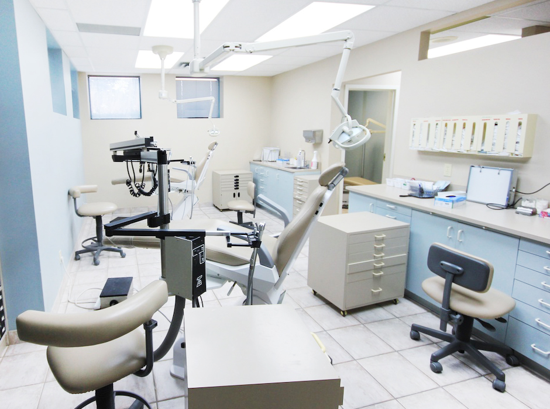

松森内科医院
TEL:0774-73-0669
〒619-0214 京都府木津川市川原田27-3
| 診療時間 | 月 | 火 | 水 | 木 | 金 | 土 | 日 |
|---|---|---|---|---|---|---|---|
| 9:00 - 12:00 | ● | ● | ● | 予約診 | ● | ● | × |
| 16:30 - 19:30 | ● | × | ● | × | ● | × | × |
- ※ 往診、特殊外来（糖尿病外来、肝炎外来）を上記時間外に予約制で行っております。
- ※ 詳しくはお電話にてお問い合わせください。
お知らせ
- 2018.12.29年末年始の休診のお知らせ
- 2018.08.08お盆のお休みをお知らせします。
- 2015.08.06お盆のお休みをお知らせします。
診療科目
内科
呼吸器内科
消化器内科
循環器内科
院長ごあいさつ
質の高く、あたたかな医療をめざします。
亡父の後を継ぎ、２００６年１２月より木津川市にて再院いたしました。
検査結果、治療方針のわかりやすい説明、専門性のある診察と検査、近隣の病院との密接な医療連携、いつでも、どんなことでも相談しやすい環境作り、を行うことで安心して過ごしていただけるように診療を行ってまいります。
院長／山田 太郎
経歴
2006年
- 松森内科医院 再院
資格
- 日本内科学会認定医
- 日本糖尿病協会登録医
- 日本消化器病学会専門医
- 日本消化器内視鏡学会専門医
- 日本肝臓学会専門医
所属
- 日本糖尿病学会会員
当院の特長

消化器内科、糖尿病科を中心に循環器内科、呼吸器内科など一般内科全般に診察をしております。
糖尿病、肝臓病はご希望の時間を相談の上予約制の外来を行っています。（もちろん通常の時間でも普通に診察はしております）
電話でお問い合わせください。
胃カメラ
約５ミリの細経のカメラのため、嘔吐反射の少ない、負担の少ない、鼻からの胃カメラを 行うことができます。従来どおり口から行うことも可能なのでご希望をお聞きして行っています。
超音波検査 （エコー検査）
ここに文章が入ります。ここに文章が入ります。ここに文章が入ります。ここに文章が入ります。 ここに文章が入ります。ここに文章が入ります。ここに文章が入ります。ここに文章が入ります。
迅速グリコヘモグロビンA1C測定器
5分で糖尿病のコントロールの指標であるグリコヘモグロビンA1Cを来院日に測定することで糖尿病の管理を行います。
骨密度検査
骨粗しょう症の有無を調べます。
胸部、腹部レントゲン検査
肺疾患、心不全の有無を調べます。
電子カルテ
電子カルテを導入することで、カルテの管理を行っています。
アクセス
" class="border border-0" style="width:100%;height:100%;" allowfullscreen="" aria-hidden="false" tabindex="0">
電車でお越しの方
- JR西日本「木津駅」より 徒歩5分
バスでお越しの方
- 木津川市巡回バス木津、木津川市役所前 徒歩3分
車でお越しの方
- 駐車場5台完備
松森内科医院
TEL:0774-73-0669
〒619-0214 京都府木津川市川原田27-3